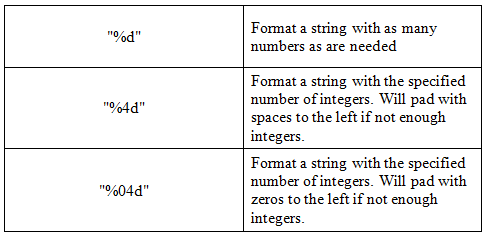

Learn Java- Complete Offline Beginners Guide
Strings of text can be formatted and output with the printf command. The printf command understands a series of characters known as a format specification. It then takes a string of text and formats it, based on the format specification passed over. As an example, supposed we wanted the Output window to display text in neat columns, like this:

The first column is left-justified, and the second column is right-justified. The code for the Exam_Name and Exam_Grade headings was this:
String heading1 = "Exam_Name";
String heading2 = "Exam_Grade";
System.out.printf( "%-15s %15s %n", heading1, heading2);
To get the left-justified column, you need a percentage symbol, a minus symbol, the number of characters, and then the letter "s" (lowercase). So ''%-15s'' means fifteen characters left-justified.
To get a right-justified column the same sequence of characters are used, except for the minus sign.
To get a newline %n is used. Note that the characters are surrounded with double quotes.
After a comma, you type the text that you want formatting. The first comma in the code above separates the format specification from the text being formatted.
Here's some tables of the various options.
String Formatting

If you want to format numbers then you can either use the "d" character or, for floating point numbers, the "f" character.
Integer Formatting

Floating Point Number Formatting

Here are some code examples of String, integer and floating point formatting. Try them out for yourself.
Same as above but the numbers occupy 10 places, with spaces to the left as padding.


Finally, here's the table again from the start of this formatting section:
And here's the code for the above formatted output:
Have a play around with formatting, and see how you get on. If you get error messages you may have gotten your "s" formatting confused with your "d" formatting!
In the next section, we'll move on and tackle Java Methods.